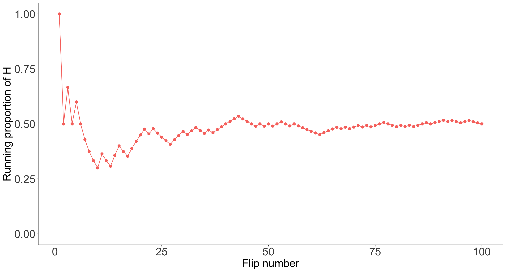

Lesson 2: Introduction to Simulations
2025-10-01
Where are we?

We saw an example of long-run relative frequency in our coin flip
In Lesson 1, we flipped a coin 100 times and recorded the proportion of heads.
- We tossed 50 heads out of the 100 flips
- Our long-run frequency was \(50/100 = 0.5\), which approximated the probability of getting a head on any one flip

- Summarize
Analyze the output using plots and summary statistics like relative frequencies and averages.
Show/Hide Code for plotting Y
Y_df <- as.data.frame(Y_simulated) %>%
rename(Y = Y_simulated)
ggplot(Y_df, aes(x = Y)) +
geom_histogram(binwidth = 1, color = "black", fill = "#B3C8BF") +
scale_x_continuous(breaks = seq(1, 4, by = 1)) +
labs(title = "Simulated Distribution of Y (Larger of Two Rolls)",
x = "Value of Y",
y = "Frequency") +
theme_minimal() +
theme(
axis.text.x = element_text(size = 20),
axis.text.y = element_text(size = 20),
axis.title.x = element_text(size = 20),
axis.title.y = element_text(size = 20),
plot.title = element_text(size = 20)
)
- Sensitivity analysis
Investigate how results change when assumptions or parameters of the model are altered.
What if we rolled three die instead of two?
Show/Hide Code for plotting Y
Y_df <- as.data.frame(Y_simulated) %>%
rename(Y = Y_simulated)
ggplot(Y_df, aes(x = Y)) +
geom_histogram(binwidth = 1, color = "black", fill = "#B3C8BF") +
scale_x_continuous(breaks = seq(1, 4, by = 1)) +
labs(title = "Simulated Distribution of Y (Larger of Two Rolls)",
x = "Value of Y",
y = "Frequency") +
theme_minimal() +
theme(
axis.text.x = element_text(size = 20),
axis.text.y = element_text(size = 20),
axis.title.x = element_text(size = 20),
axis.title.y = element_text(size = 20),
plot.title = element_text(size = 20)
)